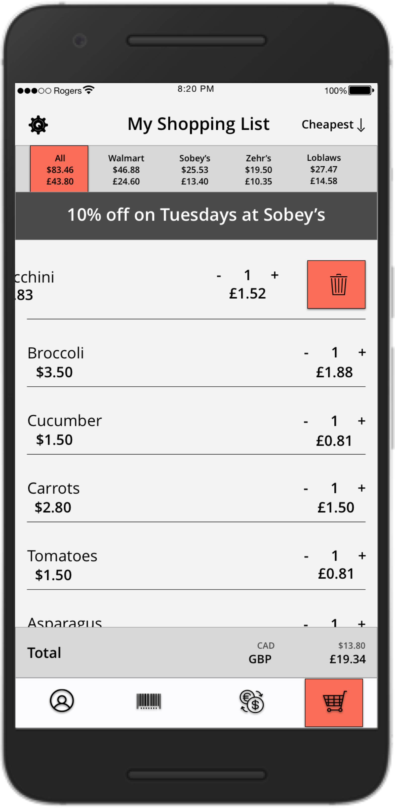
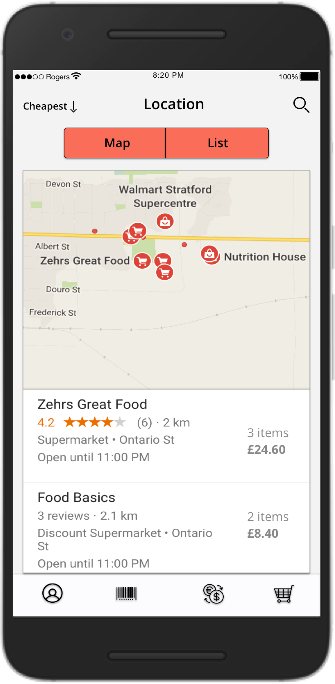
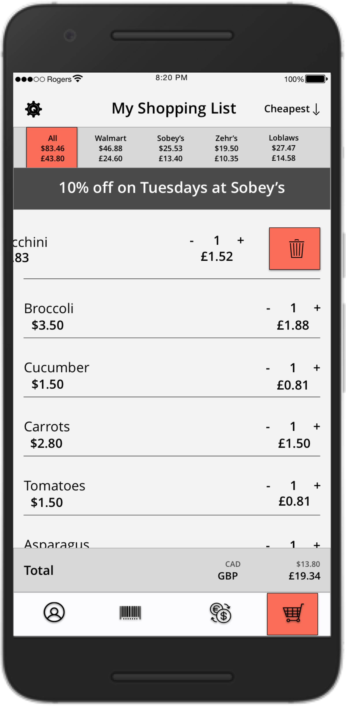
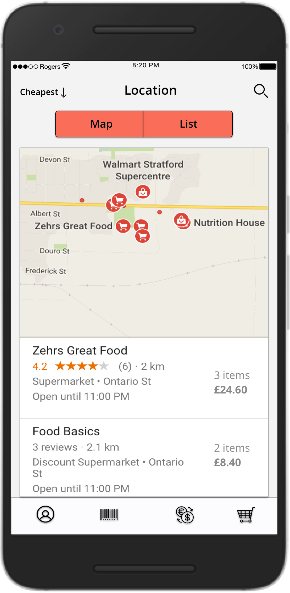

Pebble Time is one of the early competitors of Apple and Android smart watches, it was introduced in the market as a cheaper but a better alternative to other smart watches, also, in comparison to its predecessors, it had better functionality, features and usability. For the project, we decided to evaluate Pebble Time’s design quality and usability from the perspectives of people who have never experienced a smartwatch to those who used a smartwatch. The intended result for this analysis was a detailed report on our research methods, findings and recommendations for any improvements.
Pebble Time conveniently and subtly delivers information that you want directly accessible on your wrist and the new version of the software gave Pebble new features:
Timeline: Collects past and future reminders, notifications and other options accessible anytime. Mobile Platform: Connects with Android and iOS smart phones via low energy Bluetooth Extended battery life: It's always-on display and has long battery life support Applications' Support: Time is able to download multiple apps from its Pebble Time app. Store
Pebble Time was evaluated on following key aspects: Interface Design, Functionality & Features, Navigation control and aesthetics. The evaluation methods used were Task Analysis and Property Checklist.
Below are some wireframes translated to high fildelity mockups.
 


